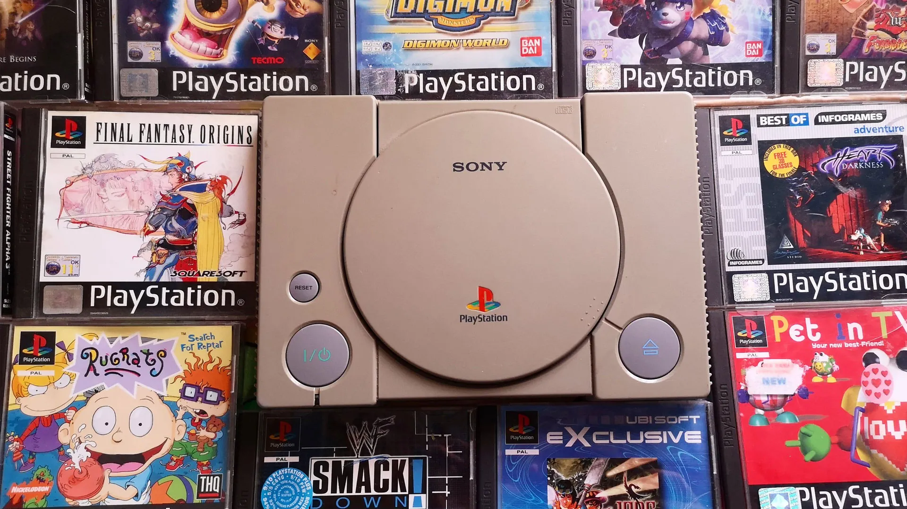
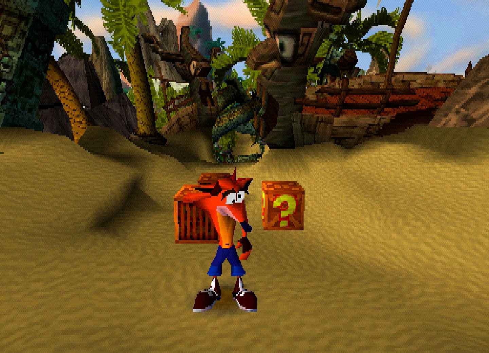
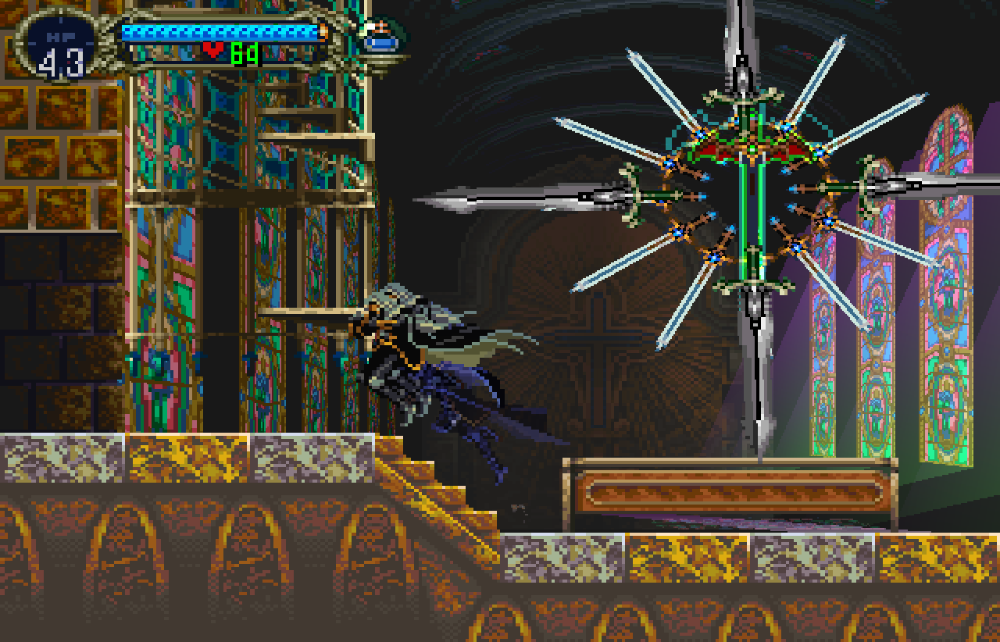

PlayStation 1994

PlayStation es la primera videoconsola de sobremesa descontinuada producida por Sony Computer Entertainment.
Fue lanzado en Japón el 3 de diciembre de 1994, en América del Norte el 9 de septiembre de 1995, en Europa
el 29 de septiembre de 1995 y en Australia el 15 de noviembre de 1995. Como consola de quinta generación,
PlayStation compitió principalmente con Nintendo 64 y el Sega Saturn.
Sony comenzó a desarrollar la PlayStation
después de un acuerdo fallido con Nintendo para crear un periférico de CD-ROM para Super Nintendo Entertainment
System a principios de la década de 1990. La consola fue diseñada principalmente por Ken Kutaragi y Sony
Computer Entertainment en Japón, mientras que el desarrollo adicional se subcontrató en el Reino Unido.
Se puso énfasis en los gráficos de polígonos en tercera dimensión al frente del diseño de la consola.
La producción de juegos de PlayStation fue diseñada para ser optimizada e inclusiva, atrayendo el apoyo
de muchos desarrolladores externos.
Crash Bandicoot

Crash Bandicoot es un videojuego de plataformas desarrollado por Naughty Dog y publicado por Sony Computer
Entertainment para la PlayStation en 1996. El jugador controla a Crash, un bandicut mejorado genéticamente
creado por el científico loco Doctor Neo Cortex. La trama sigue a Crash en su intento por rescatar a su novia Tawna,
y frustrar los planes del científico Neo Cortex para dominar el mundo. Si bien el título cuenta principalmente con un
sistema de perspectiva en tercera persona, algunos de sus niveles muestran una vista tanto lateral como frontal.
Después de aceptar un contrato de publicación de Universal Interactive Studios, los cofundadores de Naughty Dog,
Andy Gavin y Jason Rubin, emprendieron un viaje por carretera a través del país desde Boston a Los Ángeles. Durante
este tiempo, decidieron crear un juego de plataformas de acción basado en personajes desde una perspectiva tridimensional.
Decidieron crear uno de ese tipo porque les pareció que era lo más popular en ese entonces en los dispositivos arcade o
máquinas recreativas.
Castlevania: Symphony of the Night

Castlevania: Symphony of the Night, es un videojuego de acción-aventura de gráficos 2D desarrollado y publicado por Konami
en el año 1997. Es el XIII episodio de las series de Castlevania, siendo este el primero lanzado para las consolas PlayStation
y Saturn. Por otro lado, hablamos de una secuela directa de su antecesor solo lanzado en Japón: Akumajou Dracula X: Chi no Rondo
para la plataforma de NEC PC-Engine CD.
Symphony of the Night fue un importante hito en la serie Castlevania. Revolucionó la franquicia por completo, alejándose de la
fórmula estándar de plataformas «nivel por nivel» establecida por sus antecesores, exceptuando Castlevania II de NES (del cual toma muchas
pautas), e introdujo un nuevo estilo de juego combinado con elementos RPG que sería imitado por casi todos los títulos que siguieron a este
episodio.El desarrollo de todas sus características se atribuye a Koji Igarashi, el director del juego y uno de los miembros más jóvenes del
equipo en ese entonces.